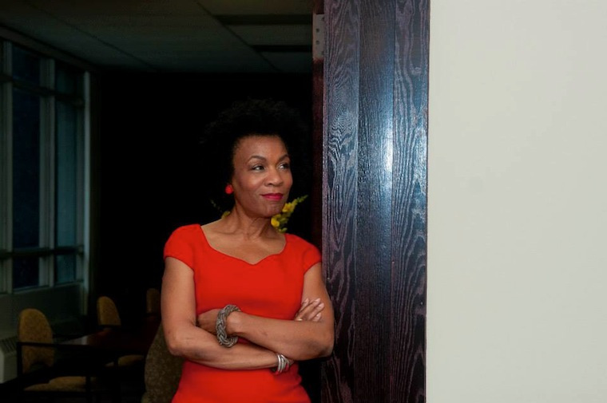

SHARON MADISON.
The owner of 1420 Washington Blvd. since the mid-1980s, Madison is an architect, activist, urbanist, preservationist, and entrepreneur, as well as a contemporary art collector and a champion of "the art of the building."
1420 Washington was vacant when she bought it and she has remained active and invested in the neighborhood since, leading efforts to declare it a historic district and to restore the original streetscape after the installation of a controversial "pedestrian mall" in the 1970s.

Taking the long view of the neighborhood, she considers the erasure of the Rubello a positive, rather than negative, event -- an act not of removal but of restoration. She links it to downtown's ongoing revival, and to preparations for a new building she intends to erect on the parking lot just north of 1420 Washington, which would have obscured Color Cubes. She highlights the mural's decrepitude before its erasure. She appreciated Rubello's use of color but did not consider Color Cubes a significant work, seeing it instead as a decaying remnant of a failed attempt at urban renewal. "Until now," she says, "no one ever walked in my door and told me that they cared about it."
See JULIAN C MADISON BUILDING , RESPONSIBILITY , and URBAN RENEWAL .